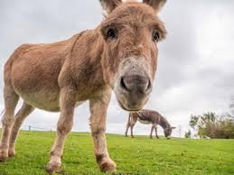
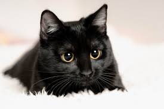

Donkeys are domesticated hoofed mammals that are known for their strength, endurance, and sure-footedness. They are often used as working animals in various parts of the world.
Donkeys communicate with loud brays, especially when they are looking for companionship or alerting others to their presence.
Due to their calm demeanor and resilience, donkeys have been valued as beasts of burden and are highly adaptable to different climates.
Donkeys clicked: 0/2
Back to Main Page